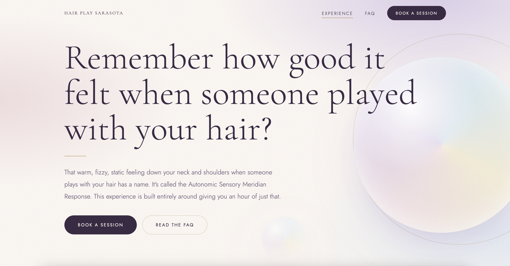
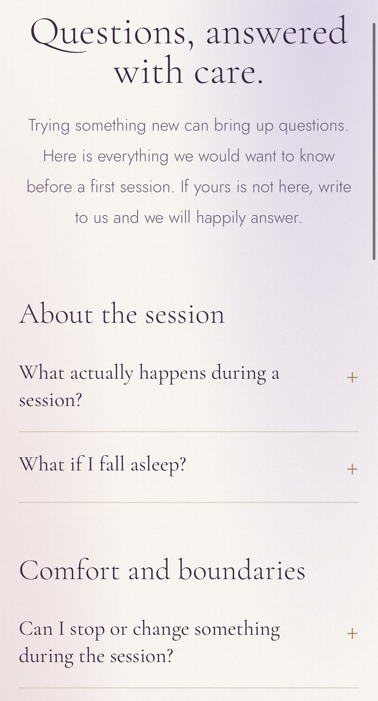

Service Business
Hair Play Sarasota
Hairplay offers a service that's a little outside the box, so the website needed to make it easy to understand without taking away from what makes it unique. We built a clean, visually appealing site that quickly shows visitors what Hairplay is, what the experience is like, and what to expect. The booking integration is right there on the page, so once someone is interested, there's no hunting around for how to book. A clear funnel straight from “what is this?” to making an appointment.

